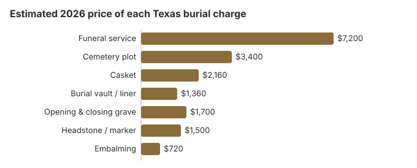

Burial Costs in Texas
Burial in Texas usually totals $16,320 to $20,820 on our estimates: about $7,200 for the funeral service, $3,400 for a plot, and the rest for the casket, vault, grave opening and a headstone ($500-$5,000). In a Texas perpetual care cemetery, part of what you pay for the plot must go into a trust fund, and the purchase agreement has to show that amount. Item prices and the state rules come next.
Texas Burial Costs by Item
| Item | Average Cost | Range |
|---|---|---|
| Funeral service | $7,200 | $5,400 – $9,360 |
| Cemetery plot | $3,400 | $1,700 – $6,800 |
| Casket | $2,160 | $720 – $5,760 |
| Burial vault / liner | $1,360 | $800 – $10,000 |
| Opening & closing grave | $1,700 | $500 – $3,000 |
| Headstone / marker | $1,500 | $500 – $5,000+ |
| Embalming | $720 | $500 – $1,500 |
Methodology note: The Texas burial prices on this page are our estimates, not quotes collected from Texas cemeteries or funeral homes, and they are not professional advice. See how we calculate them or read the full disclaimer.
State sources: Tex. Health & Safety Code § 694.002; Texas Veterans Land Board.

Counting every cemetery charge, a Texas burial usually comes to $16,320 to $20,820, with the spread depending mostly on the casket, vault and headstone.
Choosing a Type of Burial in Texas
How to Reduce Burial Costs in Texas
Burial costs in Texas can be managed with smart planning:
- Ask about church and family cemeteries: rural Texas still has many, and their plots often cost 30-50% less than those in commercial memorial parks.
- Ask the county about a veterans' section: many Texas counties set aside space for veterans apart from the national cemeteries.
How Texas Burial Compares With the Region
Church and family cemeteries still sit beside commercial ones across much of Texas, and many congregations price their sections below the market. Using a church or family plot can save more than $1,360 compared with a private cemetery, on our estimate. Small family, church and community cemeteries are also exempt from the state perpetual care law, so ask how the grounds are maintained.
Burial Resources
- Funeral Consumers AllianceNonprofit consumer advocacy for funeral pricing
- Headstone & Monument GuideCosts, types, and buying tips
- Green Burial OptionsEco-friendly and natural alternatives
- Best Online Casket RetailersCaskets bought online often cost less
- Best Burial InsuranceCompare plans to cover burial expenses
Compare Funeral Costs
- Average Funeral Cost in 2026National cost breakdown with real prices
- Cremation vs. Burial Cost ComparisonSide-by-side price comparison to help you decide
- Funeral Cost BreakdownEvery line item explained: know what you're paying for
- Cheapest Funeral OptionsLower-cost alternatives, with typical price ranges
- Direct Cremation: Most Affordable OptionNFDA 2023 median $2,645 with a family-supplied container (latest available)
- How to Compare Funeral PricesStep-by-step guide to getting the best price
Frequently Asked Questions
What do Texas families spend on burial?
Most Texas burials come to $16,320 to $20,820. That breaks down to roughly $7,200 for the funeral service, $3,400 for the plot, $2,160 for the casket, $1,360 for the vault, $1,700 for opening and closing, and $500-$5,000 for a headstone.
Do I need a vault for burial in Texas?
Texas law does not require one, and the Texas Funeral Service Commission does not regulate cemeteries, so the answer is in each cemetery's rules. This page's Texas cost table carries about $1,360 for the vault or liner, so ask the cemetery whether a plain liner meets its rule before you pay for a sealed vault.
Perpetual care cemeteries established in Texas after September 1, 1993 are licensed by the Texas Department of Banking under Health and Safety Code chapter 712, which is where complaints about those cemeteries go. Small community cemeteries of 10 acres or less, nonprofit cemetery associations, public cemeteries and church cemeteries are outside that licensing.
What are the cheapest burial options in Texas?
Direct burial, with no embalming, viewing or funeral home ceremony, is usually the lowest-priced burial a Texas funeral home offers. Families may supply their own casket, and the FTC Funeral Rule bars a handling fee. An eligible veteran can be buried in a VA national cemetery at no cost for the grave, opening and closing, liner and marker.
How do cemetery prices differ across Texas?
Prices are set cemetery by cemetery: the plot, opening and closing, and any vault or liner. Because the FTC Funeral Rule covers funeral homes rather than most cemeteries, a Texas cemetery may not have to hand you an itemized price list, but a perpetual care cemetery must show the trust fund deposit separately on the purchase agreement. Dallas-Fort Worth and Fort Bliss are two of the VA national cemeteries in Texas.
Once I add every line item, what does burial actually cost in Texas?
Adding everything up, a complete Texas burial (funeral service $7,200, plot $3,400, casket $2,160, vault $1,360, opening and closing $1,700, headstone $500-$5,000) comes to $16,320 to $20,820.
Is green burial available in Texas?
Yes. Eloise Woods Natural Burial Park, at 115 Northside Lane in Cedar Creek near Austin (512-796-5240), does not use vaults or outer burial containers. Elsewhere in Texas, ask conventional cemeteries whether they have a natural section.
The Texas Funeral Service Commission's consumer guidance on green burial adds a practical tip: where a cemetery insists on an outer burial container, it may be turned upside down without a lid so the body still rests in soil. On the funeral home side, ask for refrigeration rather than embalming and check the price of each on the General Price List.
More for Texas
Texas perpetual care, permits and death certificates
Texas cemeteries that sell plots as perpetual care must hold a certificate of authority from the Texas Department of Banking under Health and Safety Code chapter 712. Each sale must put money into the cemetery's trust fund: at least $1.75 per square foot of ground or 15% of the purchase price, whichever is greater, for a grave; $105 or 7% for a crypt ($60 if the crypt can be reached only through another crypt); and $35 or 15% for a niche (Tex. Health & Safety Code § 712.028). That deposit must appear as its own line on the purchase agreement, you get a copy, and no sales commission may be paid on it (§ 712.029). Every perpetual care cemetery files an annual statement of its fund, and a copy must be available to the public on request (§ 712.041).
The exemptions matter in rural Texas. Family, fraternal and community cemeteries of 10 acres or less, nonprofit plot-owner associations, church cemeteries and public cemeteries owned by the state, a county or a city are not covered by chapter 712 (§ 712.002), so ask those cemeteries directly how the grounds will be kept up.
For the paperwork, a burial needs a disposition permit, which the funeral home normally obtains. Certified Texas death certificates cost $20 for the first copy and $3 for each additional copy ordered at the same time from Vital Statistics; expedited processing adds $25 and overnight delivery $16, and fees are not refunded (Texas DSHS, 25 TAC § 181.22, checked October 29, 2026).
- Look for the "Perpetual Care Cemetery" or "Endowment Care Cemetery" sign the law requires at the entrance or office.
- Check that the trust deposit is listed separately on your contract.
- Order extra death certificates in the first request; each additional copy is only $3.
Burial rules and help in Texas
The Texas Funeral Service Commission (512-936-2474) licenses the funeral homes that arrange Texas burials. It does not regulate cemeteries, but it can point you to the right office: perpetual care cemeteries answer to the Texas Department of Banking, and church, small family and public cemeteries are exempt from that law.
Texas is not among the nine states the Funeral Consumers Alliance lists as requiring a funeral director, so a family can work out the plot, the grave opening and the container directly with the cemetery. A disposition permit is still needed. If plans switch to cremation, Texas requires a 48-hour wait (Tex. Health & Safety Code § 716.004).
When the family cannot pay
Each county's commissioners court must arrange the disposition of a person whose family cannot pay (Tex. Health & Safety Code § 694.002). Policies differ widely; call the county indigent-services office to ask whether it provides a burial in a county cemetery or only cremation.
Veterans
A national cemetery grave costs a Texas veteran's family nothing for the plot, opening and closing, or marker. National cemeteries accepting burials in Texas are Dallas-Fort Worth (214-467-3374), Fort Bliss in El Paso (915-564-0201), Fort Sam Houston in San Antonio (210-820-3891), Houston (281-447-8686) and San Antonio National Cemetery (210-820-3891, cremated remains only). The Texas Veterans Land Board at the General Land Office maintains five state veterans cemeteries: Central Texas in Killeen (254-616-1770), Coastal Bend in Corpus Christi (361-248-4830), Rio Grande Valley in Mission (956-583-7227), the Texas State Veterans Cemetery in Abilene (325-673-4446) and West Texas in Lubbock (806-392-9927). (Source: VA National Cemetery Administration.)
Before you buy a Texas plot
- Get the funeral home's General Price List and the cemetery's own price sheet before agreeing to a burial.
- Ask whether the cemetery requires an outer burial container, and whether a plain liner satisfies the rule.
- If the county may be paying, ask the commissioners court whether it has a county cemetery for indigent burials.
- For a veteran, ask Dallas-Fort Worth or the nearest national cemetery about eligibility before buying a private plot.
- In a perpetual care cemetery, ask to see the trust deposit on the contract and the fund's latest annual statement.
- Call the commission at 512-936-2474 if a funeral home misleads you about burial costs; the call is free.